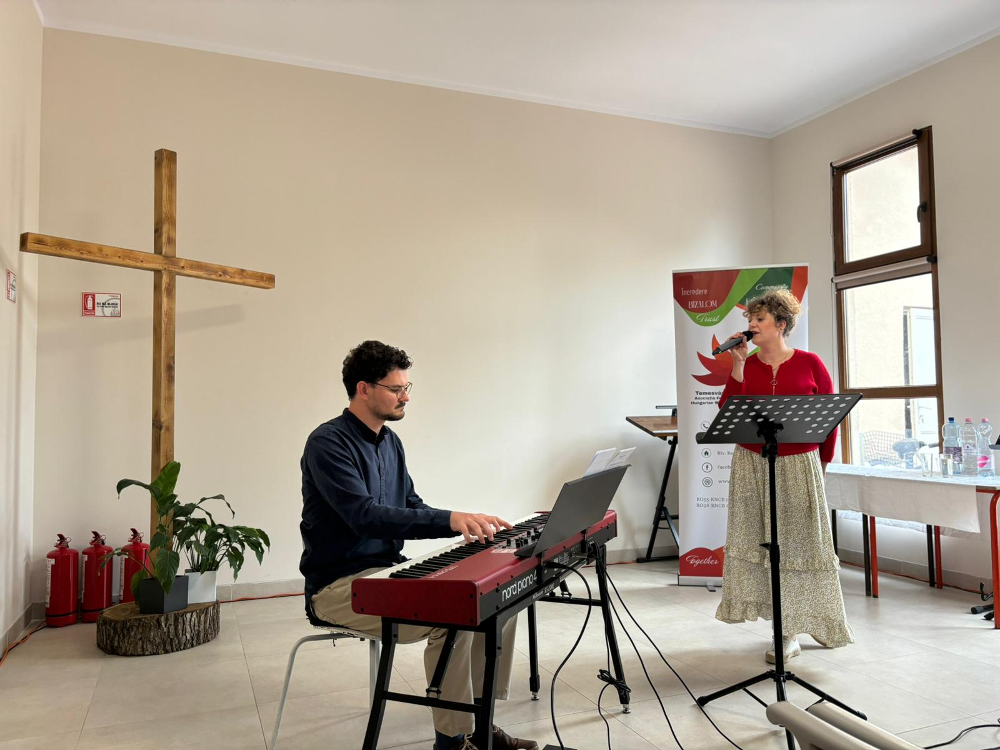
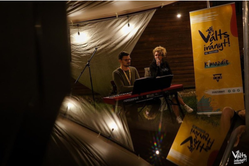

Koncerteink, koncertanyagaink
Jelen pillanatban aktívan zenélünk, fellépünk, amennyiben tehetjük eleget teszünk minden meghívásnak. Alapjáraton három állandó anyagunk van:
Bármilyen felkérésről is legyen szó, a 30 perc a minimum időtartamunk, de különleges vagy rendhagyó alkalmakre is nyitottak vagyunk. Szeretettel fogadjuk a meghívásokat és igyekszünk minden meghívásnak eleget tenni. Aki már hallott minket és velünk dobbant a szíve az meséljen rólunk, aki pedig még nem, azzal türelmetlenül várjuk a találkozást!
Eddigi koncertekről
1 / 4

Újmosnica, Bánsági Magyar Napok
2 / 4

Berekfürdő, Szlovákiai Református Egyház lelkésztovábbképzője
3 / 4

IKE Válts Irányt fesztivál
4 / 4

IKE Válts Irányt fesztivál